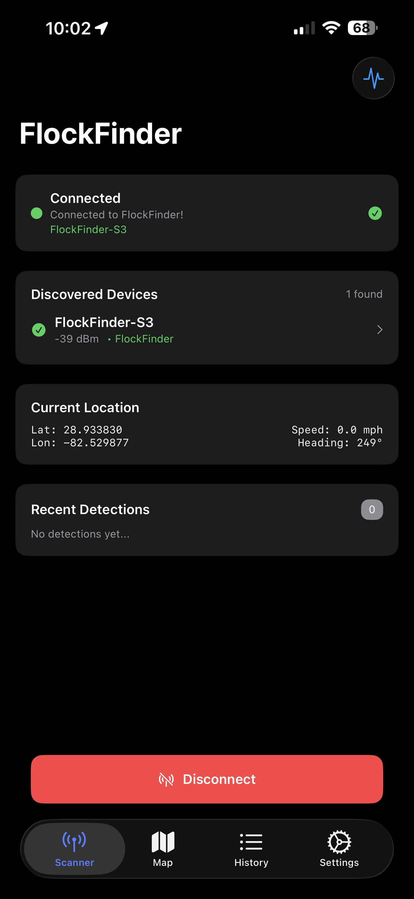

User Guide¶
This guide walks you through using the FlockFinder iOS app to detect and log surveillance cameras.
App Overview¶
FlockFinder has four main tabs at the bottom of the screen:
| Tab | Icon | Purpose |
|---|---|---|
| Scanner | 📡 | Connect to your FlockFinder device and view real-time detections |
| Map | 🗺️ | Visualize detection locations on an interactive map |
| History | 📋 | Browse, search, and export your detection history |
| Settings | ⚙️ | Configure device, alerts, and app preferences |
Scanner Tab¶
The Scanner tab is your primary interface for connecting to your FlockFinder ESP32 device and monitoring real-time detections.

Connection Status¶
At the top of the Scanner view, you'll see a connection status card showing:
- Connection state - Disconnected, Scanning, Connecting, or Connected
- Device name - The name of your FlockFinder device when connected
- Status message - Current activity or error information
Scanning for Devices¶
- Tap the "Scan for FlockFinder" button at the bottom
- The app will search for nearby FlockFinder devices
- Discovered devices appear in a list
- Tap a device to connect
Auto-Connect
Enable "Auto-connect on launch" in Settings to automatically reconnect to your last device.
Current Location¶
The location card displays your current:
- GPS Coordinates - Latitude and longitude
- Speed - Current travel speed (mph/kph)
- Heading - Direction of travel in degrees
Recent Detections¶
When connected, the Recent Detections card shows the latest camera detections in real-time, including:
- Device type and icon
- Signal strength (RSSI)
- Confidence level
- Timestamp
Map Tab¶
The Map tab provides a visual overview of all your detection locations.

Map Features¶
- Detection Pins - Color-coded pins for each detection type
- User Location - Blue dot showing your current position
- Clustering - Multiple nearby detections group together
Map Controls¶
Floating buttons on the right side of the map:
| Button | Function |
|---|---|
| 🧭 | Toggle between North-up and Heading-up orientation |
| 📍 | Center map on your current location |
| 🔄 | Refresh detection markers |
Viewing Detection Details¶
Tap any detection pin to view details:
- Device type and manufacturer
- Signal strength and confidence
- GPS coordinates
- Date and time logged
History Tab¶
The History tab lets you browse, search, and manage all your logged detections.

Statistics Header¶
At the top, scrollable badges show:
- Total detection count
- Counts by device type (Flock, Verkada, Ring, etc.)
Tap a badge to filter the list by that device type.
Search and Filter¶
- Search bar - Find detections by MAC address, SSID, or device type
- Sort options - Order by Newest, Oldest, Strongest Signal, or Highest Confidence
Detection List¶
Each detection entry shows:
- Device type icon and name
- Signal strength indicator
- Confidence percentage
- Timestamp
- Location preview
Exporting Data¶
Tap the export button (top right) to export detections in:
- CSV - Spreadsheet-compatible format
- JSON - Developer-friendly structured data
- GPX - GPS track for mapping applications
Settings Tab¶
Configure FlockFinder behavior and preferences in the Settings tab.

Device Settings¶
- Connected device info - Shows currently connected FlockFinder device
- Disconnect button - Manually disconnect from the device
- Auto-connect on launch - Automatically reconnect when app opens
iCloud Sync¶
- Settings Sync - Sync your preferences across all devices signed into iCloud
- When enabled, changes to settings are automatically synchronized in real-time
Scanning Options¶
- Background scanning - Continue scanning when app is in background
- Minimum Confidence - Filter out low-confidence detections (10% - 100%)
Map Preferences¶
- Map Orientation - Choose between:
- North Up - Map always oriented to north
- Heading Up - Map rotates to match your direction of travel
Audio Alerts¶
- Audible Alerts - Enable/disable sound notifications for detections
- Alert Sound - Choose from multiple alert sounds
- Volume - Adjust alert volume independently from system volume
- Test Alert - Preview the selected alert sound
CarPlay & Bluetooth
Audio alerts automatically route to CarPlay or connected Bluetooth audio devices.
Data Management¶
- View record count - See total number of stored detections
- Clear all data - Delete all detection history
- Export data - Backup your data to a file
Diagnostics¶
The diagnostics section shows:
- Location permission status
- GPS accuracy level
- Bluetooth connection state
- Info.plist configuration status
Connecting to Your Device¶

First-Time Setup¶
- Power on your FlockFinder ESP32 device
- Open the FlockFinder app
- Go to the Scanner tab
- Tap "Scan for FlockFinder"
- Grant Bluetooth permission when prompted
- Select your device from the discovered list
- Wait for connection to establish
Connection States¶
| State | Description |
|---|---|
| Disconnected | No device connected, ready to scan |
| Scanning | Actively searching for devices |
| Connecting | Establishing connection to selected device |
| Discovering | Setting up BLE services and characteristics |
| Connected | Successfully connected and receiving data |
| Bluetooth Off | Device Bluetooth is disabled |
| Unauthorized | Bluetooth permission not granted |
Troubleshooting Connection Issues¶
Connection Problems?
Device not found:
- Ensure your FlockFinder device is powered on
- Check the device is in range (within ~30 feet)
- Restart Bluetooth on your iPhone
Connection drops frequently:
- Move closer to the device
- Check device battery level
- Reduce interference from other Bluetooth devices
Unauthorized state:
- Go to Settings > Privacy & Security > Bluetooth
- Enable Bluetooth access for FlockFinder
Tips for Best Results¶
Driving Mode¶
For optimal detection while driving:
- Mount your iPhone where you can see the screen
- Enable Background scanning in Settings
- Enable Audible Alerts for hands-free notifications
- Use Heading-up map orientation to match your direction
Battery Optimization¶
To preserve battery life:
- Reduce GPS accuracy when not needed
- Use When In Use location permission instead of Always
- Disable background scanning when not actively detecting
Data Management¶
- Regularly export your detection data for backup
- Enable iCloud Sync to preserve settings across devices
- Use filters in History to analyze specific camera types
Quick Reference¶
| Action | How To |
|---|---|
| Connect to device | Scanner tab → Scan for FlockFinder → Select device |
| View detections on map | Map tab → Tap pins for details |
| Export data | History tab → Export button → Choose format |
| Change alert sound | Settings → Audio Alerts → Alert Sound |
| Clear all data | Settings → Data Management → Clear All |
| Check permissions | Settings → Diagnostics section |
Need more help? Check out the Building Guide or BLE Protocol documentation.